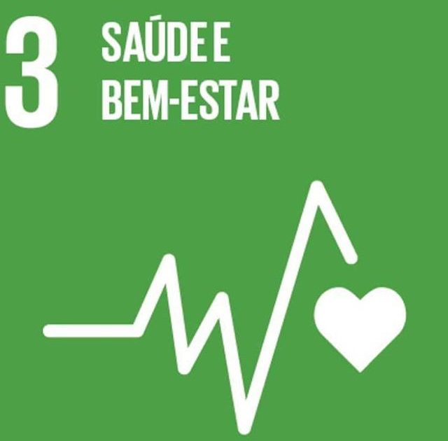

Objetivos de Desenvolvimento Sustentável


Estamos comprometidos com a promoção dos Objetivos de Desenvolvimento Sustentável (ODS), buscando atender às metas estabelecidas e promover uma cultura de responsabilidade social e ambiental. Acreditamos que a colaboração entre comunidades, empresas e governos é essencial para construir um futuro mais justo e sustentável.
Análises Físico-químicas
- Brix
- Umidade
- Indice de Refração
- pH
- Análise Sensorial
Metodologia
Formulação Final
- Ingrediente - Porcentagem (%) para 100 gramas
- Glucose - 34
- Açucar - 24
- Água - 21
- Ágar-ágar - 8
- Framboesa - 8
- Amido - 2
- Mulungu - 1
- Valeriana - 1
- Sorbato de Potássio - 0,75
- Ácido cítrico - 0,25
Produto Final
Resumo
Este estudo visa criar uma bala fitoterápica com efeitos ansiolíticos a base de extratos de plantas, como o Mulungu (Erythrina mulungu) e valeriana (Valeriana officinalis), sendo uma opção mais segura e acessivel para o alivio da ansiedade leve. A fitoterapia, regulamentada pela ANVISA, surge como alternativa ao tratamento convencional. Ansiedade um sentimento vago e desagradvel de medo, apreenso, caracterizado por tenso ou desconforto derivado de antecipação de perigo, algo desconhecido ou estranho. A bala fitoterápica foi desenvolvida utilizando técnicas de formulação e avaliada em modelos experimentais. Os resultados demonstraram a eficácia da bala fitoterápica no tratamento da ansiedade, oferecendo uma alternativa natural e segura. Este estudo contribui para o desenvolvimento de produtos fitoterápicos inovadores e eficazes para o manejo da ansiedade.